Daichi Sawamura | #1
Daichi is the captain of Karasuno and a third-year student at Karasuno High School. He is a wing spiker and a very dependable receiver, functioning as one of the team's defensive pillars. A resilient and kind leader, he is strong-willed and encourages the team both on and off the court. As the captain, Daichi has a scary side as well; a running gag in the series is when players (often Nishinoya and Tanaka) settle down because someone mentions that "Daichi is coming". He is closest with Sugawara and Asahi, having joined the team with them in his first year. He usually prefers to let his teammates work out their issues themselves rather than step in as the captain in order to encourage their personal growth. As of now, he is a Police Officer.
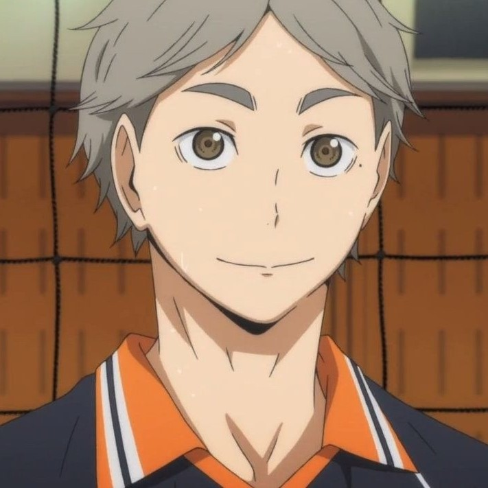Koshi Sugawara | #2
Sugawara, often nicknamed Suga, is the vice-captain of the volleyball club and a third-year student at Karasuno High School. He is originally the team's starting setter but is replaced by Kageyama. In spite of this, Sugawara holds no hard feelings and remains supportive towards both him and the rest of the team, determined to play as much as he can in his final year of high school. He is cheerful, nurturing, and empathetic; so much so, that he is nicknamed "Mr. Pleasant" by Oikawa. Despite this, Sugawara is known to be "scary when he's mad", and can become hostile when irritated. Highly intelligent and perceptive, he is deeply considerate of the moods and needs of his teammates when on the court; Coach Ukai notes that he has "the full trust of his teammates". When subbed on, he forms the basis of the team's synchronized attack and is able to utilize Kageyama as an additional spiker. He is also a pinch-server and able to aim his serves accurately to specific places on the court. He is close friends with Daichi and Asahi, having joined in his first year with them. After the timeskip, he is an elementary school teacher.
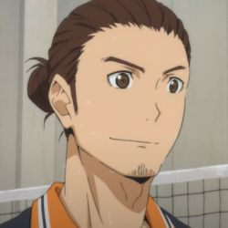Asahi Azumane | #3
Asahi is a third-year student at Karasuno and a wing spiker. The physically strongest player on the team, he is considered the current ace of Karasuno and is a pillar of attack for the team. His long hair, large stature, and impressive strength make him intimidating to others at first; much to his chagrin, players from other schools even attribute his strength to him secretly being a full-grown man who was held back. In actuality, Asahi is soft-hearted and timid, known for having a "glass heart". He sometimes struggles with low confidence and at one point, doubted his abilities so much that he left the team. Asahi is a strong spiker and is able to spike the ball from behind the line. Asahi is close friends with Daichi and Sugawara, and has a close relationship with Nishinoya, who encouraged him to return to the team. Post-timeskip, he attended a fashion school (with Noya's encouragement) and is a fashion designer based in Tokyo. He also traveled to Egypt with Noya.
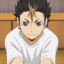Yu Nishinoya | #4
Nishinoya is a second-year student at Karasuno High School and the team's libero and defensive specialist. He is known as "Karasuno's Guardian Deity" due to his reliability for saving the ball and his high skill level. Along with Kageyama, he is considered one of Karasuno's two prodigies, having won the prefecture's "Best Libero" award in Junior High. Even shorter than Hinata, he is the smallest player on Karasuno. Nishinoya is loud, energetic and deeply passionate about his position, believing that he would choose to play libero even if he were born taller. He is considered the backbone of the team, as his specialization in receives and block recovery allow the team to keep scoring and continue the rally. Nishinoya is very proud of (but usually ridiculed for) his signature move, "Rolling Thunder", merely a rolling receive where he shouts "rolling thunder". He has a close relationship with Asahi, refusing to play unless the latter returned to his role as the team's ace. He is usually with Tanaka, both of whom adore team manager Shimizu Kiyoko. He comes from Chidoriyama middle school and is viewed as a very powerful player, shown when an opposing high school begins to talk about possible threats on the Karasuno team, mainly Nishinoya being an amazing libero. He was probably good enough to get into a powerhouse school, but enrolled at Karasuno because he thought that the girl's uniforms were cute and that the boy's all-black gakuran looked cool. After the timeskip, he travels the world.
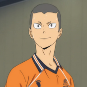Ryunosuke Tanaka | #5
Tanaka is a second-year student at Karasuno High School and a wing spiker. He is loud, fierce and aggressive, but deeply respects his seniors and looks out for his juniors, wanting to be a good senior for them. Tanaka is a talented and versatile spiker and often gets digs that keep the rally going. When playing, he displays amazing mental fortitude, even when he is continuously targeted by the opposite team. Unfortunately, his aggressive behavior, volume, and delinquent-like appearance sometimes make a poor impression. Tanaka often tries to intimidate and pick fights with other teams, which Daichi or Sugawara must then break up. He is good friends with Nishinoya, and they both adore their team manager. After the timeskip, he runs a Sports shop, and is married to Kiyoko.
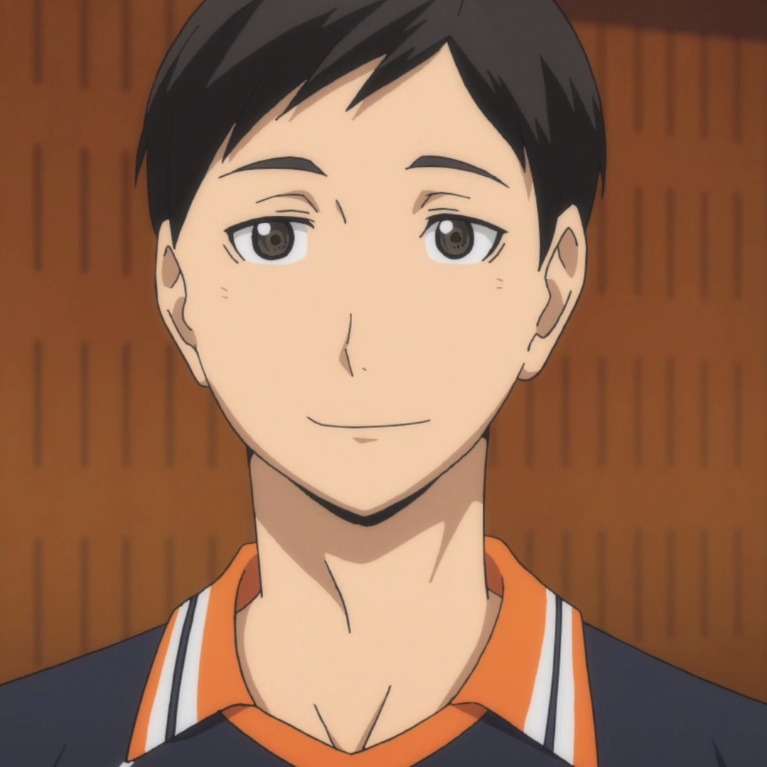Chikara Ennoshita | #6
Ennoshita is a second-year student at Karasuno High School and a wing spiker. Despite his plain appearance, he is seen as the "leader" of the second-year students and possibly the only one able to control Nishinoya and Tanaka's antics apart from Daichi, as he is more mature and says things bluntly without remorse. In his first year, he was part of the "ungrateful second-years", a group of a few students who quit the team due to the pressure and extreme practice sessions of Coach Ukai Sr. Eventually, due to his love for volleyball, he returns to the team only to find Coach Ukai Sr. had retired again. Feeling guilty, Ennoshita sometimes feels that he does not deserve to be on the team and pushes himself during training to "earn back his spot". Though not a starting player, Ennoshita shows great potential for his leadership skills and his ability to motivate and keep the team in check.
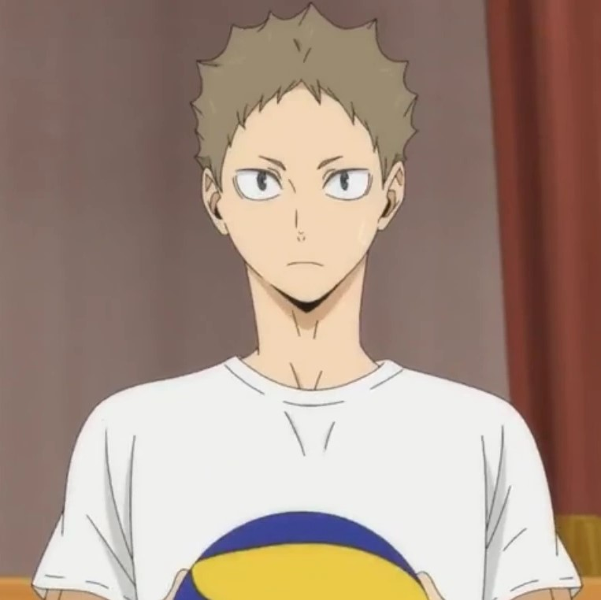Hisasi Kinoshita | #7
Kinoshita is a second-year student at Karasuno High School and a wing spiker. He, along with Ennoshita and Narita, was one of few students who left the club when Ukai Sr. came out of retirement to continue coaching. He later starts to specialize in the jump float serve. He's very anxious when it comes to his own abilities and constantly worries about whether he’s good or not. Even though he isn’t a regular, he is very supportive of his team. He's also been noted to have an "uncanny knack of putting points on the board" by Ukai. He's always seen cheering Karasuno on. It seems he's not afraid to make sly remarks about his teammates such as telling Tanaka, "Don't take off your shirt, baldy!"[1]. He also very casually insulted Tanaka when he was showing off after having won the first set of the match between the first years with Hinata and Kageyama.
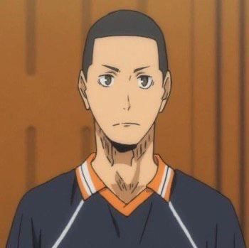Kazuhito Narita | #8
Narita is a second-year student at Karasuno High School and a middle blocker. He also left the volleyball team temporarily. He works well with Sugawara, practicing his combination attacks and regular attacks so that he can get a regular spot on the team. Narita appears to be a calm, friendly person who doesn't get riled up too easily. He joined the Karasuno boys' volleyball team in his first year of high school, but temporarily left with Ennoshita and Kinoshita shortly after Ikkei Ukai returned to the team as they were unable to keep up with the harsh training methods and felt the club was not fun anymore. However, they regretted their decisions and came back but by that time, Ikkei was hospitalized again. This past led them to call themselves the "The Ungrateful Second Years."
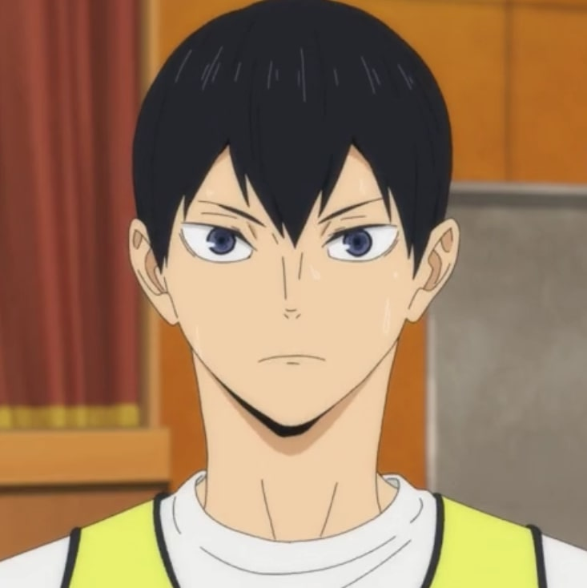Tobio Kageyama | #9
Kageyama is a first-year student at Karasuno High School. He is the team's starting setter and was notoriously known as the "King of the Court" in Junior High for his tyrannical sets and authoritarian-style leadership. Considered one of Karasuno's two prodigy players, his tenacious desire to win coupled with his lack of regard for needs of his teammates caused them to abandon him in the middle of a match. Kageyama becomes deeply afraid of Karasuno abandoning him in a similar way and strives to be more considerate of the needs of his team. He originally tried to enroll at Shiratorizawa but was rejected. At Karasuno, Kageyama slowly learns the importance of trust, respect, and teamwork in volleyball. He forms an unlikely setter-spiker partnership with Hinata, and the two develop their signature freak quick. Known even amongst other schools as a 'volleyball genius', Kageyama is famous for his 'pin-point' setting accuracy, serves, and game sense. Because it is his responsibility as a setter to 'utilize' each spiker to their greatest potential, he functions as one of Karasuno's main pillars of attack. Though he is usually polite with good intentions, he nevertheless has poor social skills and difficulty expressing himself. He often engages in trivial competitions and shouting matches with Hinata. As of current, he plays for the Schweiden Adlers, along with Shiratorizawa's Ushijima and Kamomedai's Korai. He and Hinata play for the Japanese National Team (in the future).
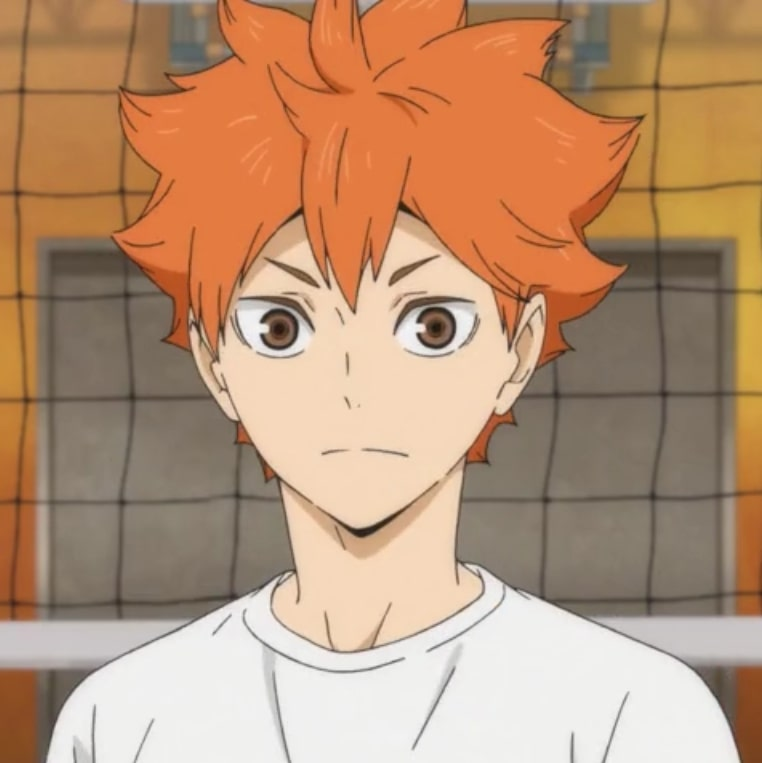Shoyo Hinata | #10
Hinata is a first-year student at Karasuno High School and the protagonist. He was initially a wing spiker in Junior High but is currently a middle blocker. He is coincidentally the number 10, which the Little Giant, the former Karsuno ace and his idol, also wore. His speed and incredible vertical jump allow him to play as a decoy to trick opposing teams and grant leeway to Karasuno's attackers, gaining him the nickname "the perfect decoy". Though he aspires to become the ace, he grows to learn and embrace the importance of his role. Hinata is extremely cheerful, boisterous, and optimistic. Despite his small size, clumsiness, and lack of fundamental skills, his extraordinary stamina, reflexes, and vertical earn him a spot on the regular lineup. He plays exceptionally well when partnered with Kageyama as his setter, and the two quickly gaining notoriety amongst other teams for their 'freak quick', where Hinata jumps before (as opposed to during or after) the toss, then Kageyama quickly and accurately sets the ball to the exact pinnacle of Hinata's jump. Hinata is incredibly devoted to volleyball and practices tirelessly, leading to his explosive growth as a player. For the rest of his high school years, he redems Karasuno's fallen honor with the help of the other Karasuno first years. After high school, he went to Brazil to train further in beach and indoor volleyball. As of now, he plays for the MSBY Black Jackals, along with Fukurodani's Bokuto, Inarizaki's Atsumu, and Itachiyama's Sakusa. He achieved his goal of beating Kageyama in an official game, with the defeat of the Schweiden Adlers in the game between the two teams. The two play together for Japan's National Team (in the future).
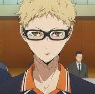Kei Tsukishima | #11
Tsukishima is a first-year student at Karasuno High School and a middle blocker. He is Karasuno's tallest player and known for being a calm and clever blocker, forming an important part of Karasuno's defense. His simultaneously polite yet condescending attitude often angers both his own teammates (usually Kageyama and Hinata) and opposing teams. Tsukishima often thanks other players cheerfully when they make snide remarks to his face. Despite his apparent arrogance and scornful attitude, Tsukishima actually has an inferiority complex and hates "elite players" like Kageyama; during the team's formation, he only refers to Kageyama as 'the King' or 'Your Highness' to anger him and draw out his tyrannical personality. Tsukishima is the only team member to question his devotion to volleyball, due in part to past personal experiences. His closest friend is Yamaguchi, who refers to him by the nickname "Tsukki". Despite his apparent indifference towards him, Tsukishima trusts in his abilities and is proud of his improvements. As a player, he is noted to be the complete opposite of Hinata, who in contrast is short, energetic, and acts instinctually. Currently, he works at the Sendai city museum and plays for Sendai's local team.
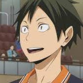Tadashi Yamaguchi | #12
Yamaguchi is a first-year student at Karasuno High School and a middle blocker. Yamaguchi is utilized as "Karasuno's spear" and pinch-server, often catching opponents off guard and scoring consecutive points in a row. He is shy but friendly and extremely hard-working. After realizing his lack of skill prevented him from contributing to the team in a productive way, he sought the help of Karasuno alumnus Makoto Shimada, who teaches him how to jump float serve. He is close friends with Tsukishima, who he has followed around since the third grade when the latter scared off a group of boys who bullied him for his freckles. A running gag in the series is Yamaguchi complimenting Tsukishima, Tsukishima telling him to shut up, and Yamaguchi apologizing. Despite his admiration for his friend, Yamaguchi is not afraid to voice his opinion when he disapproves of something Tsukishima is doing, and yells at him for not giving his all during training. Currently, he works at a Home Electronics company.